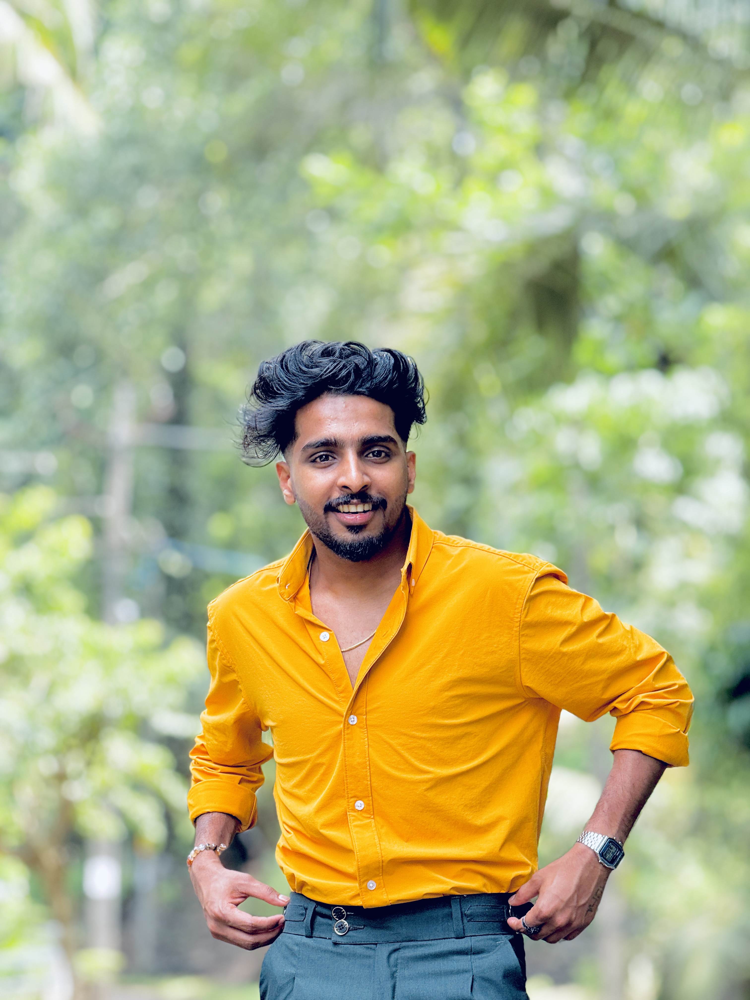

UI/UX Design
Interfaces that feel natural before you know why.
↗Independent designer / visual storyteller
I turn ambitious ideas into clear, memorable experiences through identity, interface, and motion.
Curious by nature. Precise by craft.

JEFIN / 26I’m a multidisciplinary designer who likes finding the quiet idea that makes a loud difference.
For the last 3+ years, I’ve partnered with founders, teams, and people with a point of view to shape brands and digital products that feel as good as they work.
When I’m away from the screen, you’ll find me photographing ordinary places, collecting type specimens, or overthinking a perfect cup of coffee.
Every project gets the exact mix of thinking, making, and refinement it needs.
Interfaces that feel natural before you know why.
↗Visual language with a point of view.
↗Identities built to be remembered.
↗Movement that gives a message its rhythm.
↗Stories with a sharp cut and a clear arc.
↗Detail is where the image starts to sing.
↗Shape, line, and a little bit of magic.
↗Making the invisible easy to collaborate on.
↗A few things I’ve helped bring into the world recently.
A slower, warmer kind of luxury.
Finance, reimagined.
Everything looks different in motion.
Objects with a little soul.
A winding path, a growing practice, and plenty more ahead.
Helping ambitious people turn early ideas into enduring visual worlds.
Shaped brand identities, campaign systems, and digital products for a diverse roster of clients.
Learned to ask better questions, make more drafts, and care about every last pixel.
Studied the fundamentals of visual communication, typography, and interaction design.
From first sketch to polished product.
↗Identity systems that make an impression.
↗Content with consistency and character.
↗Stories that hold attention all the way through.
↗Giving your visual language a pulse.
↗Digital homes that feel like you.
↗Tell me what you’re working on, what’s keeping you up at night, or just say hello. I’ll get back to you within 2–3 working days.
hello@jefintom.design ↗